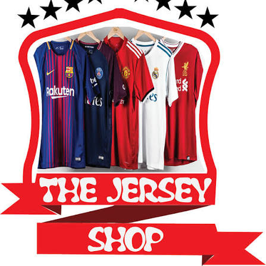
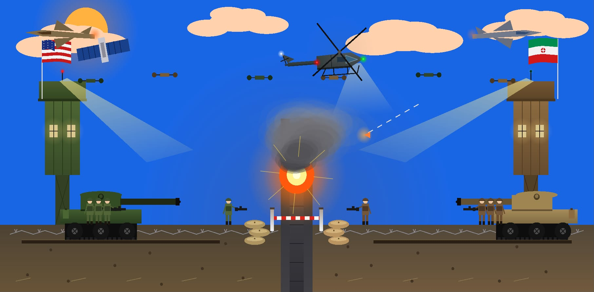

Projects :-
- Object Oriented Programming(OOP1) :-
- Project Title: Bazar Bondhu
- Project Description: **BAZAR BONDHU** is an OOP-based online shopping platform that enables users to browse products, manage shopping carts, place orders, and track deliveries. The project was developed using Object-Oriented Programming concepts including classes, objects, inheritance, encapsulation, and polymorphism to ensure a structured and scalable system design.
- Object Oriented Programming 2(OOP2) :-

- Project Title: Jersey Shop Management
- Project Description: **Jersey Shop Management System** is a desktop-based application developed using Object-Oriented Programming (OOP) concepts to manage jersey inventory, customer information, and sales records efficiently. The system allows users to add, update, search, and delete jersey products, manage customer orders, and generate sales reports. OOP principles such as encapsulation, inheritance, polymorphism, and file handling were implemented to create a structured, reusable, and maintainable system.
- Computer Graphics :-

- Project Title: Iran-USA Border Conflict Zone
- Project Description: **Iran-USA Border Conflict Zone** is a computer graphics project developed using OpenGL, GLUT, and C++. The simulation depicts a nighttime military border standoff featuring detailed animations, explosions, tanks, fighter jets, soldiers, watchtowers, and realistic environmental effects. The project includes over 80 graphical elements designed collaboratively by team members, showcasing expertise in computer graphics, animation, and object rendering. Atmospheric features such as a moonlit sky, stars, clouds, smoke, fire, debris, and lighting effects were incorporated to create an immersive and realistic battlefield environment.
Forms:
Go to 'Index' form
Go to 'Education' form
Go to 'Projects' form
Go to 'Contact Me' form